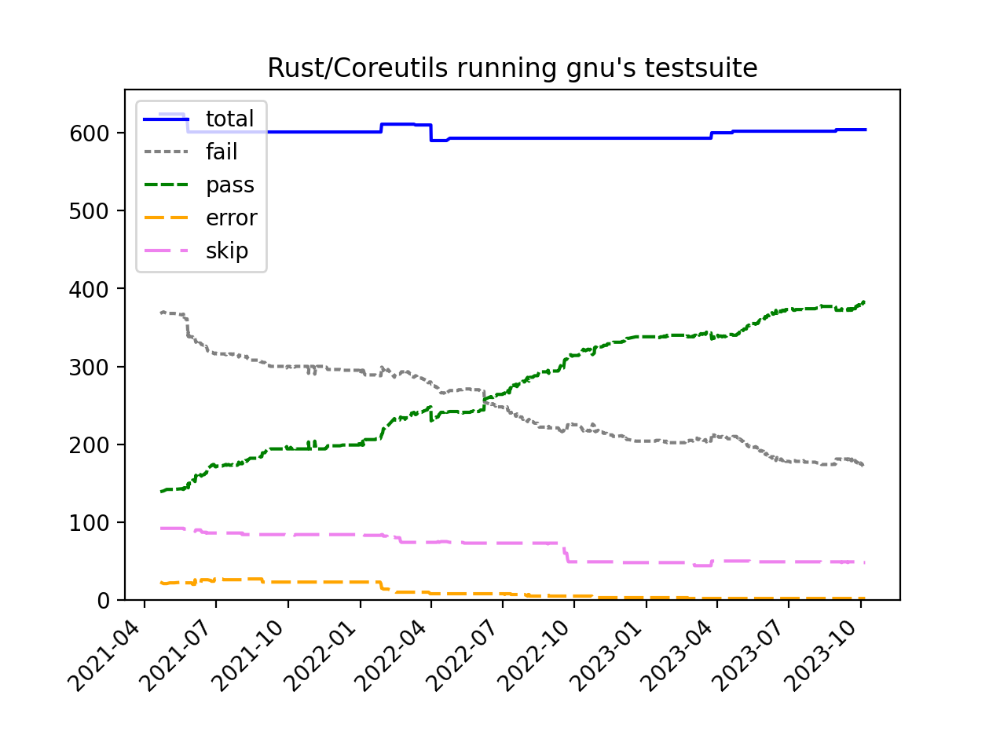
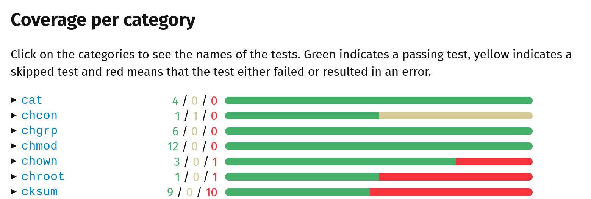

class: center, middle, inverse # Reimplementing the Coreutils in a modern language ## (Spoiler: Rust, not C++) ## Sylvestre Ledru - sylvestre@debian.org ## Télécom Paris<br />Thursday 28th November 2023 --- # Who am I ? Debian developer, LLVM/Clang contributor, and other things. Director at Mozilla (but this work is unrelated to Mozilla). And been managing some <img src="Rust_programming_language_black_logo.svg" width="300"/> developers but also worked next to Rust core developers. --- # Who am I ? (bis) I also uploaded the initial version of Rustc in Debian/Ubuntu. And maintainer of ripgrep, fd and some others Rust based packages in Debian/Ubuntu. --- # Early 2020 <hr /> <img src="covid-2.png" height="150"/> <hr /> --- class: center, middle, inverse template: inverse # How to make the best use this time? --- # Some people made <img src="pain.jpg" height="400"/> .footnote[Credit Julien Danjou - April 2020] --- # Other did Some gardening, wood working, etc .footnote[Credit Serge Guelton] --- # At first, we started with --- # Then .footnote[Total: 106 hours 42 minutes] --- # Continued with <img src="tbbt.jpg" height="400" /> .footnote[Total: 102 hours 30 minutes] --- # Me? I want to learn Rust for real with an impactful project. --- class: center, middle, inverse template: inverse # What about the Coreutils ? --- # What about the Coreutils ? I have always been curious to see how it works. --- # What the point ? Well, it is a good question -- 1. Why not? -- 2. Rust rocks. -- 3. It is NOT about security<br /> https://security-tracker.debian.org/tracker/source-package/coreutils<br /> Only 17 CVE in GNU/Coreutils since 2003 -- 4. It is NOT about license (for me at least).<br /> Not interested by the MIT vs GPL debate. -- 5. It is very interesting. --- # First version UNIX: PDP-7<br /> Author: Ken Thompson <ken@research.uucp> <br /> Date: Tue Jun 30 05:00:00 1970 -0500 We can find: * chmod.s * chown.s * cp.s * ... <a href="https://archive.softwareheritage.org/swh:1:dir:602df0b42085a30f0bdcb864063a4ad7922770d7;origin=https://github.com/dspinellis/unix-history-repo;visit=swh:1:snp:6e90639ed08c76dbf81928f565a97215b1cb56d9;anchor=swh:1:rev:16fdb215eeab60c2e7b8d624b22bdc9c0422484f">See sources on Software Heritage</a> --- # Side note <img src="Ken_Thompson_and_Dennis_Ritchie--1973.jpg" /> Adam Gordon Bell interviewed Brian Kernighan in his podcast:<br /> https://corecursive.com/brian-kernighan-unix-bell-labs1/<br /> <code>he [Ken] built himself basically a working operating system in three weeks.</code> In the expression, <i>standing on the shoulders of giants</i>. They are our giants. --- # 'New' version in C Research Unix - first versions<br /> More on https://en.wikipedia.org/wiki/Research_Unix Author: Ken Thompson <ken@research.uucp><br /> Date: Tue Nov 21 14:35:16 1972 -0500<br /> Co-Authored-By: Dennis Ritchie <dmr@research.uucp><br /> Mix of ASM (ex: ls.s, ln.s, etc) & C (cp.c, if.c, etc) <a href="https://archive.softwareheritage.org/swh:1:dir:56f474bdc8a5475a2a37221377235510e91ccc17;origin=https://github.com/dspinellis/unix-history-repo;visit=swh:1:snp:6e90639ed08c76dbf81928f565a97215b1cb56d9;anchor=swh:1:rev:57d94bd7265b0f4c07b74eeb409118de076baef4">See sources on Software Heritage</a> --- # 'New' version in C Example of code - CLI implementation ```c // usr/source/s1/chmod.c for(m=0; *c; c++) { if(*c < '0' || *c > '7') { printf("bad mode\n"); exit(1); } m = (m<<3) | *c - '0'; } for(i=2; i<argc; i++) if(chmod(argv[i], m) < 0) { count++; perror(argv[i]); } ``` <a href="https://archive.softwareheritage.org/swh:1:cnt:b6047836d794e43c05ee7f780d504549154ded2e;origin=https://github.com/dspinellis/unix-history-repo;visit=swh:1:snp:6e90639ed08c76dbf81928f565a97215b1cb56d9;anchor=swh:1:rev:9cad36bfa38acba86ece03c4b809d20e953057d2;path=/usr/source/s1/chmod.c">See source on Software Heritage</a> --- # 'New' version in C Example of code - chmod function implementation ```c // usr/sys/ken/sys4.c chmod() { register *ip; if ((ip = owner()) == NULL) return; ip->i_mode =& ~07777; if (u.u_uid) u.u_arg[1] =& ~ISVTX; ip->i_mode =| u.u_arg[1]&07777; ip->i_flag =| IUPD; iput(ip); } ``` <a href="https://archive.softwareheritage.org/browse/content/sha1_git:622663d75c8704c139c33a8d908cc6b01bb23db7/?branch=refs/heads/Research-V5-Snapshot-Development&origin_url=https://github.com/dspinellis/unix-history-repo&path=usr/sys/ken/sys4.c#L150">See source on Software Heritage</a> --- # A simple programming language We take it for granted and rarely think about it but<br /> pipes `|` and redirection `>` are amazing -- It is kind of the STL for scripting (bash, zsh, etc). -- Quick example: How would you implement an algorithm to find the 5 most popular words in all Shakespeare books? (with 6 chars or more) -- ``` $ tr -cs A-Za-z '\n' < shakespeare.txt | tr A-Z a-z | grep -E '^.{6,}$' | sort | uniq -c | sort -rn | head -n 5 ``` -- By the way, the results: ``` 1706 should 1125 father 1082 exeunt 952 before 876 master ``` --- class: center, middle, inverse template: inverse # Fast forward to 2023 --- # Fast forward to 2023 About 105 commands in the GNU implementation. ```bash arch cut fold mkfifo printenv split tsort base32 date groups mknod printf stat tty base64 dd hashsum mktemp ptx stdbuf uname basename df head more pwd stty unexpand basenc dir hostid mv readlink sum uniq cat dircolors hostname nice realpath sync unlink chcon dirname id nl relpath tac uptime chgrp du install nohup rm tail users chmod echo join nproc rmdir tee vdir chown env kill numfmt runcon test wc chroot expand link od seq timeout who cksum expr ln paste shred touch whoami comm factor logname pathchk shuf tr yes cp false ls pinky sleep true csplit fmt mkdir pr sort truncate ``` Note: grep, find, less, top or watch are NOT part of the coreutils. --- # And plenty of arguments Example with `cp` and other commands ```bash $ cp --help | grep " -" | wc -l 34 $ chown --help | grep " -" | wc -l 15 $ ln --help | grep " -" | wc -l 16 $ ls --help | grep " -" | wc -l 61 ``` --- # Quick quizz Who knows about ... -- * ls/cp/mv/rm/mkdir -- * chown/chmod/chgrp -- * numfmt ```bash echo 1.18GB|coreutils numfmt --from=si --suffix=B 1180000000B ``` --- # Quick quizz Who knows about ... * ls/cp/mv/rm/mkdir * chown/chmod/chgrp * numfmt * pr -- ``` convert text files for printing ``` --- # Quick quizz Who knows about ... * ls/cp/mv/rm/mkdir * chown/chmod/chgrp * numfmt * pr -- * csplit -- ``` split a file into sections determined by context lines ``` --- # Quick quizz Who knows about ... * ls/cp/mv/rm/mkdir * chown/chmod/chgrp * numfmt * pr * csplit * and others like factor, pinky, tsort, shuf, shred, seq, etc --- # A bunch of different implementations * GNU's coreutils * BSD * Busybox * Toybox (Android) * V lang implementation https://github.com/vlang/coreutils * SerenityOS * ... ??? (if you know, please sylvestre@debian.org) --- # Now, this Rust implementation? * Started by Jordi Boggiano in 2013 (yeah, before Rust 1.0) * Found it early 2020, saw that some maintainers were still around helping * Started to contribute in April 2020 for real and quickly took over --- # Some stats now --- # Status * Packaged in most of the <a href="https://uutils.github.io/user/installation.html">linux distros</a> -- * Used by Apertis -- * Used by a famous social network via the Yocto project --- # But why it makes sense to use Rust? * Secure by default for memory mgmt -- * Very portable -- * Terrific performances (more later) -- * Very popular language (easy to find new contributors) -- * Lot of crates (Rust libraries) available - Don't have to reimplement the wheel: - lscolors - provides the same colors as ls - walkdir - recursive operations on the fs (cp, rm, etc) - tempfile - generate some temporary files/dirs (mktemp, etc) - teminal_size - to know how to display information -- And very easy to use these crates + most of the time cross platform --- <img src="graph.png" width="100%"/> --- # Goal of this implementation? * Replicate the success of clang - dropped in replacement for GNU's -- * Cross platform - support Linux, Windows, MacOS, Android, FreeBSD, Fuchsia, etc -- * Easy to test: <b>`cargo test --features unix`</b> and fast: <b>`finished in 44.29s`</b> -- * I don't care (ie please don't troll me) but the license is MIT -- * It isn't about fighting the GNU project or the FSF --- # My Goals * My initial goals were: - Be able to boot Debian -- - Install the top 1000 packages -- - Build Firefox, LLVM and the Linux Kernel -- - Package it for Debian & Ubuntu -- * Published some <a href="https://sylvestre.ledru.info/blog/2021/03/09/debian-running-on-rust-coreutils">blog</a> <a href="https://sylvestre.ledru.info/blog/2022/01/29/an-update-on-rust-coreutils">posts</a> about it TLDR: it works. This presentation is done a Debian testing with Firefox running the Rust/coreutils --- # My Goals (bis) To achieve, we had to deploy: -- * Proper CI (and therefore build system) for all supported platforms -- * Add code coverage support -- * Improve the code coverage results (ie write plenty of tests)<br /> Currently <b>84.04%</b> -- * Plug clippy and rustfmt -- * Document the various processes -- Took about a year to be in that state --- class: center, middle, inverse template: inverse # Current status --- # Current status Running the GNU testsuite with our binaries:  --- # Now, How do we work? Our goals are pretty simple: dropped in replacement for the gold standard (GNU's). Great news: the GNU test suite is amazing and we made it super easy to test with: ```bash bash util/run-gnu-test.sh tests/touch/not-owner.sh ``` Will run a GNU's test for touch using the Rust implementation --- # Remaining work We have a simple script to list the failing tests: ```bash python3 util/remaining-gnu-error.py ``` <hr /> https://uutils.github.io/user/test_coverage.html  --- # Collaboration with GNU We contributed to the GNU implementation: * Programming issues - <a href="https://debbugs.gnu.org/cgi/bugreport.cgi?bug=50070">chmod reads uninitialized variables</a> -- * Inconsistencies - <a href="https://debbugs.gnu.org/cgi/bugreport.cgi?bug=49239">Unexpected results with sort -V</a> -- * Tests improvements - <a href="https://github.com/coreutils/coreutils/commit/3564e3a572b64c5384519d735dbbb88690438eae">ls --dired tests</a> or <a href="https://github.com/coreutils/coreutils/commit/1ac8630f1eed599e84f5a45f3eb14ae32546ac94">mktemp -t: $TMPDIR has higher priority than -p</a> -- * Testsuite improvements - <a href="https://github.com/coreutils/coreutils/commit/8367b95a13b96b96db93a7339c094f813af877c9">Tests separated in different directories</a> --- # Dropped in replacement? Also means output. Example: GNU mkdir: ```bash $ mkdir -p -v a/../b/../c mkdir: created directory 'a' mkdir: created directory 'a/../b' mkdir: created directory 'a/../b/../c' ``` -- and we had ```bash $ ./target/debug/mkdir -p -v a/../b/../c ./target/debug/mkdir: created directory 'a/../b/../c' ``` .footnote[https://github.com/uutils/coreutils/pull/3217] --- # Fuzzing to the rescue? Fuzzing is great to find bugs. And can be extended with Differential Testing. -- <a href="https://en.wikipedia.org/wiki/Differential_testing">Wikipedia</a>: <i> a popular software testing technique that attempts to detect bugs, by providing the same input to a series of similar applications (or to different implementations of the same application), and observing differences in their execution.</i> -- We can check 3 parameters: -- * stdout -- * stderr -- * exit code --- # Fuzzing to the rescue? - Example Differential fuzzing between GNU and our implementation of the `expr` command. -- ``` Running test ["expr", "49", "<", "27", "%", "75S"] Test Type: expr Input: ["49", "<", "27", "%", "75S"] Rust stderr: Expected an integer operand GNU stderr: non-integer argument Discrepancy detected: stderr differs Test completed with discrepancies for expr: ["49", "<", "27", "%", "75S"] ``` --- class: center, middle, inverse template: inverse # Performances ? --- # Performance Disclaimer: benchmarking performances is HARD Some binaries are significantly faster. -- Example #1: ``` $ hyperfine -r 10 \ "target/release/coreutils sort -R shakespeare.txt > shakespeare.txt.rand; \ target/release/coreutils sort shakespeare.txt.rand > /dev/null" \ "sort -R shakespeare.txt > shakespeare.txt.rand; \ sort shakespeare.txt > /dev/null" é [...] Summary 'target/release/coreutils sort -R shakespeare.txt > shakespeare.txt.rand; target/release/coreutils sort shakespeare.txt.rand > /dev/null' ran 4.63 ± 0.19 times faster than 'sort -R shakespeare.txt > shakespeare.txt.rand; sort shakespeare.txt > /dev/null' ``` 4.63 times faster than GNU's --- # Performance Example #2: ``` $ bash "Clone Firefox" $ hyperfine -i --warmup 2 "target/release/coreutils ls -al -R ~/dev/mozilla/mozilla-unified.hg > /dev/null" "ls -al -R ~/dev/mozilla/mozilla-unified.hg > /dev/null" [...] Summary 'target/release/coreutils ls -al -R ~/dev/mozilla/mozilla-unified.hg > /dev/null' ran 1.43 ± 0.15 times faster than 'ls -al -R ~/dev/mozilla/mozilla-unified.hg > /dev/null' ``` 1.43 times faster than GNU's -- Similar result for cp -R <!-- ``` $ hyperfine "rm -rf /tmp/coreutils.git; ./target/release/cp -r ../coreutils.git /tmp" "rm -rf /tmp/coreutils.git; /usr/bin/cp -r ../coreutils.git /tmp" Summary 'rm -rf /tmp/coreutils.git; ./target/release/cp -r ../coreutils.git /tmp' ran 1.47 ± 0.34 times faster than 'rm -rf /tmp/coreutils.git; /usr/bin/cp -r ../coreutils.git /tmp' ``` --> --- # Performance To be fair, we can be slower too Example #3: ``` $ hyperfine "seq 18446744073708551615 18446744073709551615 | factor" \ "./target/release/coreutils seq 18446744073708551615 18446744073709551615| ./target/release/coreutils factor" [...] 'seq 18446744073708551615 18446744073709551615 | factor' ran 5.08 ± 0.01 times faster than './target/release/coreutils seq 18446744073708551615 18446744073709551615| ./target/release/coreutils factor' ``` --- # Extending the coreutils We took the liberty to add extra features like: * progress bars for cp & mv -- * b3sum (works like b2sum) -- * cut `-w` from FreeBSD - <i>separate fields by whitespace (Space and Tab)</i> --- # What is next? * Implement missing options in the various binaries -- * Complete the full compatibility with the GNU tools -- * Improve performances on some key programs --- class: center, middle, inverse template: inverse # Thanks for your time --- class: center, middle, inverse template: inverse # Reminder: not a Mozilla project. --- class: center, middle, inverse template: inverse # Let's try together